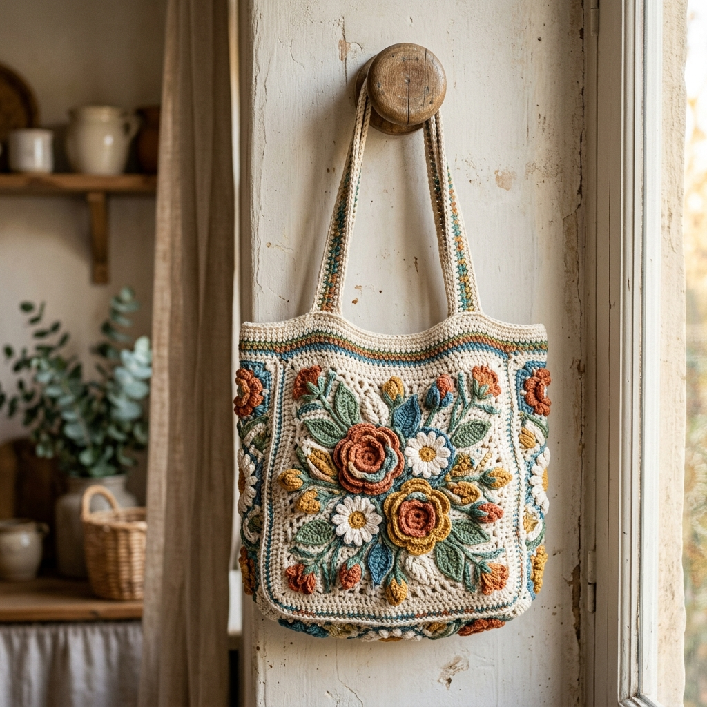
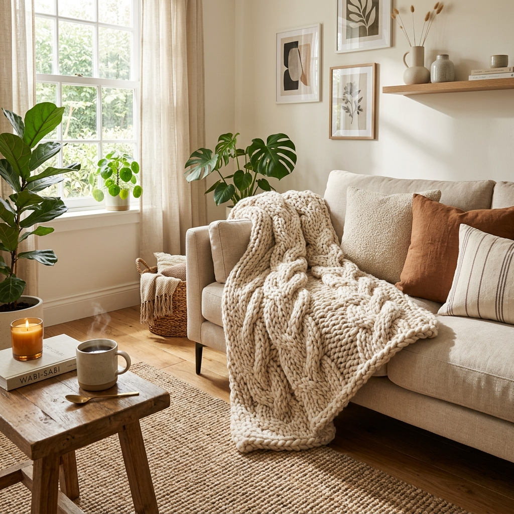
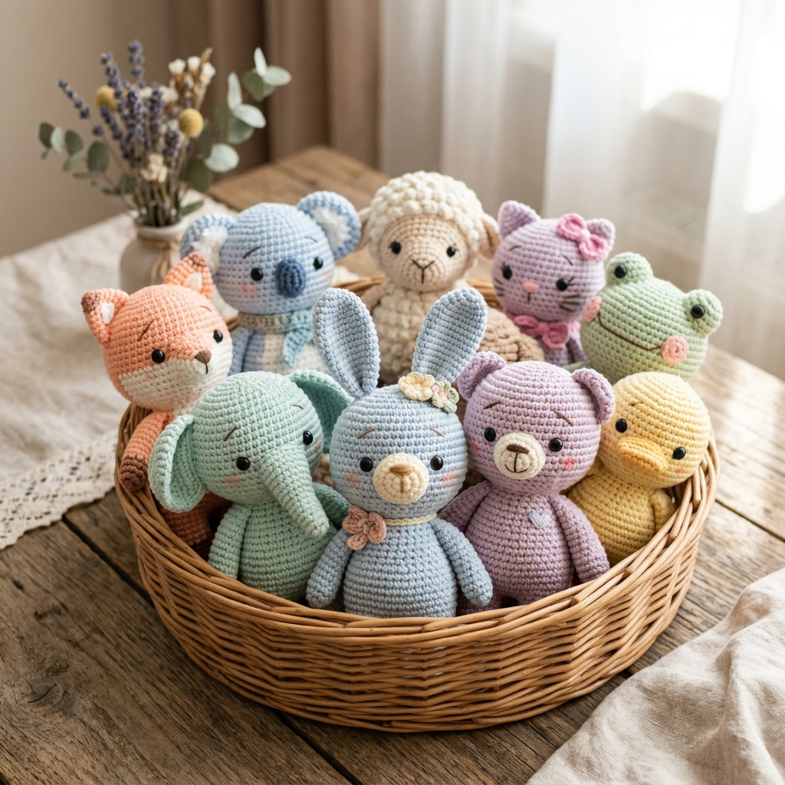
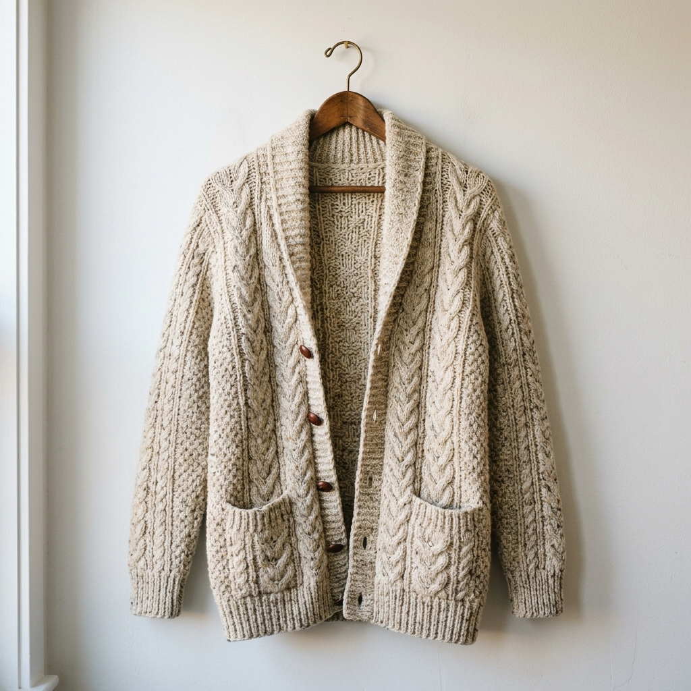

กระเป๋าโครเชต์ลายดอกไม้แกรนนี่
ผลงานถักต่อดอกหลากสีสัน ใช้ไหมพรมคอตตอน 4ply ถักต่อกันเป็นกระเป๋าสพายข้างสุดเก๋
รวมผลงานสร้างสรรค์อันงดงามจากไหมพรมและเข็มถัก โดยสมาชิกชุมชน CrochetStudio เพื่อส่งต่อแรงบันดาลใจให้กันและกัน

ผลงานถักต่อดอกหลากสีสัน ใช้ไหมพรมคอตตอน 4ply ถักต่อกันเป็นกระเป๋าสพายข้างสุดเก๋

ใช้ไหมพรมจัมโบ้เส้นใหญ่นุ่มพิเศษ ถักด้วยไม้นิตเบอร์ 10mm ให้ความรู้สึกอบอุ่นในฤดูหนาว

รวมคอลเลกชันตุ๊กตาสัตว์น่ารัก ใช้ไหมคอตตอนนมยัดใยสังเคราะห์เกรดเอ เหมาะทำเป็นของขวัญ

เสื้อคลุมถักโครเชต์ลายโปร่ง น้ำหนักเบา สวมใส่สบายในทุกสภาพอากาศ